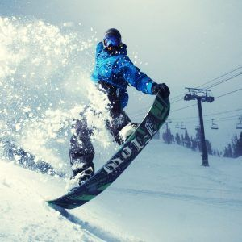
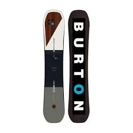
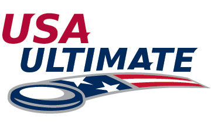

Hobbies


Snowboarding
- I started Snowboarding when I was 6 years old when my dad took my to Mount Snow in Vermont
- Once I was in middle school and High school I would go alot of weekends with my friends. I have learned alot of new tricks and have gotten alot better over the years
- In my senior year of highschool I bought a snowboard and snowboard gear from my local shop for about $1200 and have used it since.
- Up here at The University of Maine I have the season pass to Sugarloaf and go most weekends during the season.
Ultimate Frisbee
- I started playing Ultimate Frisbee sophmore year of highschool. My friends and I would play after school everyday with the club.
- Junior year, my freinds and I made Ultimate frisbee an official sport at our school and began scheduling games.
- Senior year we joined two 24 team tournaments and came in 3rd on the first Tournament and Won the Greens Farms Academy tournament against 24 other teams. Our final record for the season was 21-5 and moved up to division 2 in Connecticut.
